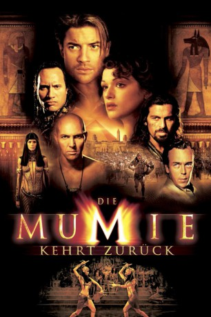

#234 Die Mumie 2 - kehrt zurück
Alternativ: The Mummy Returns
 
 IMDB-Wertung: 6.3 / 10
IMDB-Wertung: 6.3 / 10  Metascore: 48
Metascore: 48 
Die Überreste von Imhotep und Anck-su-Numam werden nach London in ein Museum gebracht. Dort verweilen sie auch für zehn Jahre, und in der Zwischenzeit ziehen Rick und Evelyn ihren kleinen Jungen auf. Doch dann erwacht Anck-su-Numam aus ihrer Ruhe, denn sie ist hinter dem Kleinen her. Er soll der Schlüssel für die Wiedergeburt der ägyptischen Göttin Isis sein
Jahr: 2001
Dauer: 130 Minuten
FSK: 12
Land: USA Studio: Universal PicturesTonspuren:
Untertitel:
Auflösung: 1080p (1920×816) Größe: 10752 MB
Genre: Action, Abenteuer, Fantasy, Thriller
Regisseur: Stephen Sommers
Drehbuch: Stephen Sommers
Soundtrack: Alan Silvestri
Darsteller:
 Brendan Fraser als Rick O'Connell
Brendan Fraser als Rick O'Connell Rachel Weisz als Evelyn / Nefertiri
Rachel Weisz als Evelyn / Nefertiri John Hannah als Jonathan
John Hannah als Jonathan Arnold Vosloo als Imhotep
Arnold Vosloo als Imhotep Oded Fehr als Ardeth Bay
Oded Fehr als Ardeth Bay- Patricia Velasquez als Meela / Anck-Su-Namun
- Freddie Boath als Alex
 Alun Armstrong als Mr. Hafez
Alun Armstrong als Mr. Hafez Dwayne Johnson als The Scorpion King
Dwayne Johnson als The Scorpion King Adewale Akinnuoye-Agbaje als Lock-Nah
Adewale Akinnuoye-Agbaje als Lock-Nah Shaun Parkes als Izzy
Shaun Parkes als Izzy- Joe Dixon als Jacques
 Aharon Ipalé als Pharaoh
Aharon Ipalé als Pharaoh- Donna Air als Show Girl
 Sean Cronin als High Priest , uncredited
Sean Cronin als High Priest , uncredited- Stephen Sommers als Man in Bathtub at Izzy's Place , uncredited
- Bruce Byron als Red
 Tom Fisher als Spivey
Tom Fisher als Spivey- Quill Roberts als Shafek
- Trevor Lovell als Mountain of Flesh
- Brian Best als British Museum Mummy , uncredited
- Max Cavalera als Scorpion King , uncredited
- Salem Hanna als Egyptian Digger , uncredited
- Paul Sacks als Red Turban Guard , uncredited
- Rocky Taylor als Man in Alley , uncredited
Datei: X:\5-Pentalogie(A-Z)\Mumie\Mumie 2 - kehrt zurück, Die (2001, FSK12, 1920x816).mkv seit 15.02.2015
Festplatte: HD Collection-3(N-Z)-6(A-Z)
 Es gibt insgesamt 9 Filme in der Gruppe '5-Pentalogie(A-Z)\Mumie'
Es gibt insgesamt 9 Filme in der Gruppe '5-Pentalogie(A-Z)\Mumie'